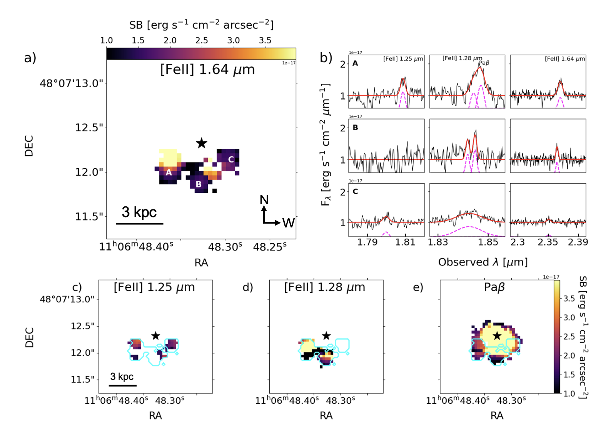
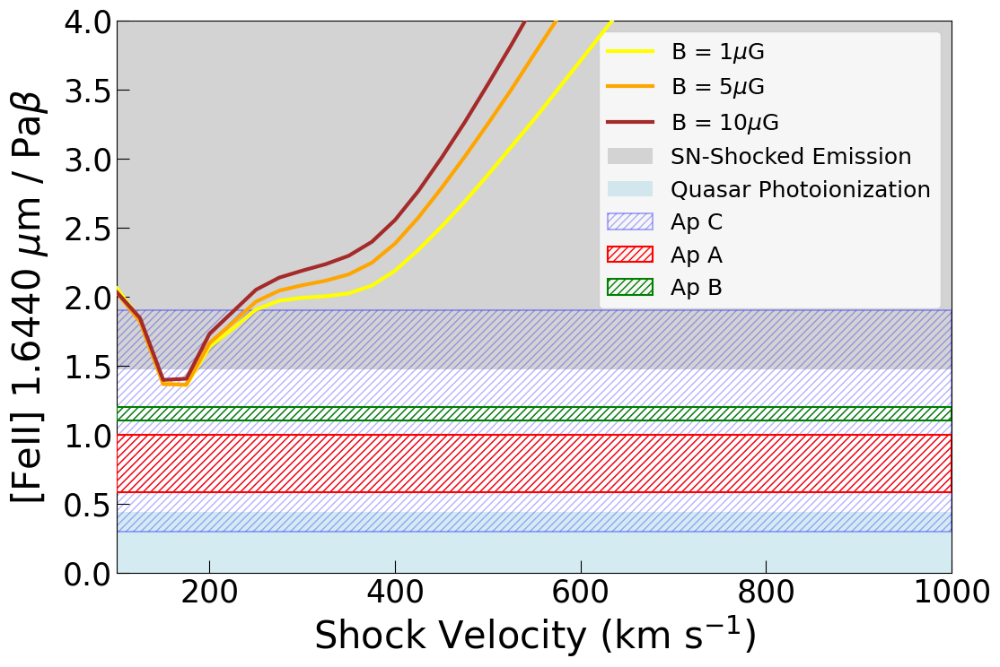

Direct Evidence of Shock Ionization in a Dusty Quasar: Sankar et al. 2025 (see also Wylezalek et al. 2022; Vayner et al. 2023a, 2023b)

F2M1106, an obscured quasar at z = 0.435, exhibits spatially resolved [Fe II] emission in JWST/NIRSpec
IFU data (above), positioning it as a valuable case study for studying feedback mechanisms and validating analysis tools such as
q3dfit. Obscured quasars like F2M1106 offer critical insight into AGN feedback during key evolutionary stages—when
powerful winds interact with the host galaxy’s interstellar medium (ISM). Shock ionization, traced by near-infrared [Fe II] emission,
provides rare, direct evidence of these interactions, revealing how quasar-driven outflows can heat, expel, or disrupt cold gas and potentially
suppress star formation.

Our analysis reveals two distinct [Fe II]-emitting regions around the quasar, shaped by different physical mechanisms. In the southeast and southwest, the [Fe II] gas shares kinematic signatures with the [O III] outflow (above)—high velocities and broad line widths— indicating it is part of an AGN-driven wind. In contrast, [Fe II] emission to the south appears more quiescent, with narrower lines and lower velocities, suggesting it remains confined to the galaxy’s disk. Emission-line diagnostics (below) reveal that while the outflowing regions are primarily photoionized by the AGN, the southern [Fe II] is shock-excited—likely by the outflow impacting the interstellar medium. ' This spatial separation of photoionization and shocks offers rare, direct evidence of how quasar outflows interact with the host galaxy’s gas.
